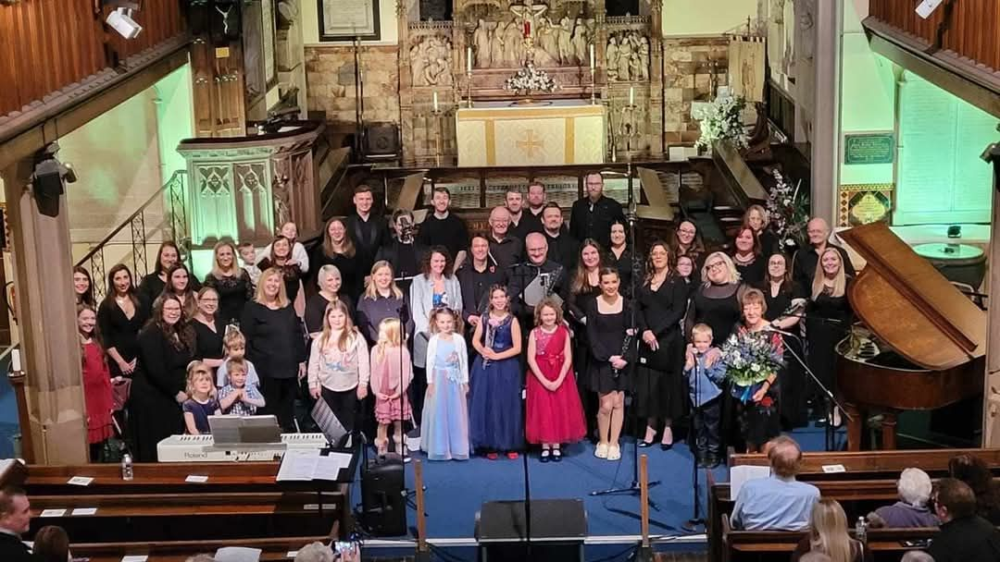

Introduction
Welcome to CYC In Harmony! Our mission is to create an inclusive, enjoyable, and enriching environment for individuals to rediscover the joy of singing.
We are a Stoke-on-Trent based Choir that was formed by former members of the S-O-T City Youth Choir from 1997-2009.
Following a successful Reunion concert in 2024, the members wanted to continue as a new group and CYC In Harmony was born.

On this website, you will find all the details and updates regarding CYC In Harmony!
You can use the links above to find out more about us, our upcoming events, information about joining the choir and the standards we uphold.
Follow us on Facebook: CYC In Harmony Facebook Page